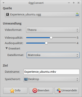

Vorbis
Dieser Artikel wurde für die folgenden Ubuntu-Versionen getestet:
Ubuntu 16.04 Xenial Xerus
Ubuntu 14.04 Trusty Tahr
Zum Verständnis dieses Artikels sind folgende Seiten hilfreich:
Vorbis  bzw. Ogg/Vorbis (oftmals auch fälschlich nur Ogg) ist ein Audio-Codec der Xiph.org Foundation . Er wurde entwickelt, um eine patentfreie Alternative zum weit verbreiteten MP3 anzubieten. Ferner kann man Vorbis als verlustbehaftetes Gegenstück zum verlustfreien FLAC bezeichnen, der ebenfalls von Xiph.org stammt.
bzw. Ogg/Vorbis (oftmals auch fälschlich nur Ogg) ist ein Audio-Codec der Xiph.org Foundation . Er wurde entwickelt, um eine patentfreie Alternative zum weit verbreiteten MP3 anzubieten. Ferner kann man Vorbis als verlustbehaftetes Gegenstück zum verlustfreien FLAC bezeichnen, der ebenfalls von Xiph.org stammt.
Eine bislang wenig verbreitete Weiterentwicklung ist das Audiodatenformat Opus, das ebenfalls lizenzkostenfrei genutzt werden kann und sowohl für Sprache als auch Musik geeignet ist (die Xiph.org Foundation hatte dazu neben Vorbis den separaten Codec Speex für Sprachaufnahmen entwickelt).
Details¶
Entwicklungsgeschichte¶
Die Entwicklung von Vorbis begann im Jahre 1998, nachdem das Fraunhofer-Institut begonnen hatte, Lizenzgebühren von Entwicklern zu verlangen, die den MP3-Standard in ihrer Software verwendeten. Die Xiph.org Foundation begann daraufhin mit der Entwicklung eines freien Audiocodecs, was in der Open-Source-Gemeinde großen Anklang fand.
Vergleich mit MP3¶
Vorbis arbeitet genau wie MP3 verlustbehaftet und bedient sich ebenfalls eines psychoakustischen Models. Der Algorithmus löscht also diejenigen Bereiche des Audiomaterials, die der Mensch schlecht oder gar nicht hört. Auf diese Weise wird eine sehr starke Datenreduktion von durchschnittlich 70-90% erreicht. Negativ an dieser Vorgehensweise ist, dass das Audiomaterial nicht mehr originalgetreu wiederhergestellt werden kann, da die verworfenen Klangmuster verloren sind.
Ein Qualitätsvergleich von Vorbis und MP3 ist schwierig: Der originale MP3-Codec des Fraunhofer-Instituts aus dem Jahre 1996 ist Vorbis zweifellos unterlegen. Allerdings gibt es noch das Projekt LAME, das MP3 stetig verbesserte. Hier ist der Fall nicht mehr ganz so klar, denn mit LAME umgewandelte MP3-Dateien werden ebenfalls mit ausgefeilteren Methoden erstellt und klingen daher besser als die des Originals. Die Effizienz von Vorbis wird im offiziellen FAQ jedoch trotzdem als „definitiv besser“ tituliert.
Surround-Sound¶
Vorbis unterstützte schon immer bis zu 255 Kanäle. Im März 2010 wurde der Coupling-Support (in etwa: es werden nur Unterschiede zwischen den einzelnen Kanälen gespeichert) für Surround-Sound stark verbessert, sodass Vorbis für Mehrkanalton deutlich kleinere Dateien erzeugt und somit mit AAC vergleichbar ist (weitere Informationen: Demo1, Demo2 und Demo3 )
Verbreitung¶
Auf Softwareebene kann Vorbis mittlerweile recht bedenkenlos eingesetzt werden. Jeder halbwegs moderne Audioplayer unterstützt das Format von Hause aus – und zwar unter allen gängigen Betriebssystemen. Dank seiner Streamingfähigkeit kann Vorbis auch problemlos für Dinge wie Internetradio eingesetzt werden (siehe Icecast2).
Bei Hardware-Playern („MP3 Player“) war die Unterstützung von Vorbis lange Zeit eher selten anzutreffen. Seit dem Siegeszug von Android, das heutzutage auf zahlreichen mobilen Geräten zum Einsatz kommt, hat sich diese Situation geändert, da Vorbis dort standardmäßig implementiert ist.
Auf einige ältere Medienspieler lässt sich die freie Firmware Rockbox installieren, welche Vorbis ebenfalls unterstützt.
Installation¶
In den Paketquellen [1] finden sich folgende Programme für den Umgang mit Vorbis:
vorbis-tools (universe, enthält u.a. Programme zum De-/Enkodieren)
vorbisgain (universe, zum Einfügen von Replay-Gain-Werten)
 mit apturl
mit apturl
Paketliste zum Kopieren:
sudo apt-get install vorbis-tools vorbisgain
sudo aptitude install vorbis-tools vorbisgain
Umwandeln¶
Achtung!
Einer der größten Fehler, die man machen kann, ist das Umwandeln einer MP3-Sammlung in Vorbis oder umgekehrt: Verlustbehaftete Codecs sollten nur einmal angewendet werden, da es ansonsten zu Generationsverlust kommt.
Die Vorbis-Tools sind zwar reine Shell-Programme, der normale Benutzer wird aber meist nur einen Bruchteil der Befehle benötigen, die sich in der Manpage finden. Wer für die Umwandlung eine grafische Oberfläche bevorzugt – oder Rippen und Umwandeln komfortabler kombinieren möchte –, findet im Artikel Audiodateien umwandeln eine Auflistung von Anwendungen, die auf die Vorbis-Tools zurückgreifen.
Unterstützte Formate¶
Rohdaten
FLAC (Nur lesend; vorhandene Metadaten (Tags) werden standardmäßig in die Vorbis-Datei übernommen)
Enkodieren¶
Die allgemeine Syntax für oggenc lautet [2]:
oggenc OPTIONEN EINGABE_DATEI(EN)
Optionen müssen nicht zwingend angegeben werden. Der einfachste Aufruf sieht schlicht so aus:
oggenc Lied.wav
Hierbei arbeitet oggenc mit der empfohlenen Qualitätsstufe 3, die für die meisten Anwendungsfälle einen guten Kompromiss zwischen Qualität und Größenverringerung darstellen sollte. Die Stufen reichen insgesamt von -1 bis 10. Die Auswahl ist denkbar einfach wie das folgende Beispiel für die Qualitätsstufe 6 zeigt:
oggenc -q 6 Lied.wav
Befehlsübersicht (Auszug)¶
Experten-Info:
Im Gegensatz zu MP3 wurde Vorbis von Anfang an auf das Arbeiten mit einer variablen Bitrate (VBR) ausgelegt. Auch bei älteren Hardware-Dekodern besteht also keine Gefahr einer Inkompatibilität.
| Generelle Optionen | |
| Option | Beschreibung |
-q, --quality ZAHL | Die vorgefertigten Qualitätsstufen. -1 = geringe Qualität aber kleine Datei, 10 = das Gegenteil. |
-b, --bitrate ZAHL | Keinen fest definierten Bitrate-Bereich nutzen, sondern ungefähr an diese Bitrate halten (z.B. 128) |
--managed ZAHL | Mit konstanter Bitrate (CBR) enkodieren. Nur beim Streaming nützlich, verringert die Qualität. |
-m, --min-bitrate ZAHL | Minimale Bitrate für selbst festgelegten Bitrate-Bereich (z.B. 64) |
-M, --max-bitrate ZAHL | Maximale Bitrate für selbst festgelegten Bitrate-Bereich (z.B. 256) |
--resample ZAHL | Hertz der Abtastrate ändern wenn es denn nötig sein sollte (z.B. 48) |
--downmix | Stereo Audiomaterial in Mono herunterrechnen |
Replay-Gain¶
Als modernes Audioformat unterstützt Vorbis auch Replay Gain, womit beim späteren Abspielen eine relativ gleich bleibende Lautstärke gehalten werden kann. Der Codec selbst kann allerdings nicht die nötigen Werte kalkulieren. Hierzu ist vorbisgain dienlich. Ein Normalisieren wie beim Format MP3 ist jedoch nicht möglich.
Aufruf¶
Standardmäßig kalkuliert Vorbisgain im sogenannten „Radio Modus“, der die Lautstärke aller Dateien unabhängig voneinander bewertet:
vorbisgain Lied1.ogg Lied2.ogg Lied3.ogg
Der „Album-Modus“ hingegen berücksichtigt die Lautstärke aller Dateien und hält sich somit an beabsichtigte Schwankungen die beim Abmischen eines Albums eingebracht wurden. Zu beachten ist, dass Vorbisgain nicht selbstständig erkennt, welche Dateien zum gleichen Album gehören, sondern sich auf die Angaben des Benutzers verlässt:
vorbisgain -a Lied1.ogg Lied2.ogg Lied3.ogg
Sollen Dateien wieder vom Replay-Gain-Wert bereinigt werden:
vorbisgain -c Lied1.ogg Lied2.ogg Lied3.ogg
Zum Taggen aller Dateien mit der Endung .ogg oder .OGG im Ordner /Musik und dessen Unterordner:
find /Musik '*.ogg' -execdir vorbisgain {} \+ Dekodieren¶
Um Vorbis-Dateien wieder in Wave zurück zu wandeln, dient das ebenfalls im Paket vorbis-tools enthaltene Programm oggdec. An dieser Stelle sei nochmals darauf hingewiesen, dass Vorbis beim Enkodieren des Audiomaterials Klangmuster unwiederbringlich verworfen hat, welche auch eine Rückwandlung in Wave nicht wiederherstellen kann.
Aufruf¶
oggdec Lied.ogg
Falls die Wave-Datei aus Kompatibilitätsgründen eine bestimmte Auflösung haben muss, kann zwischen 8 und 16 gewählt werden:
oggdec -b 16 Lied.ogg
Wahl der richtigen Qualitätsstufe¶
Vielfach wird beim Enkodieren einfach eine der höchsten Qualitätsstufen benutzt, was aber oft überzogen ist. Bereits von Seiten der Hardware kann meistens überhaupt kein "glasklarer" Klang (der dies rechtfertigen würde) erzeugt werden, da häufig billige OnBoard-Chipsätze und/oder Lautsprecher eingesetzt werden. Obendrein hat jeder Mensch ein anderes Gehör. Die Xiph.org Foundation beschreibt im offiziellen FAQ die Qualitätsstufen 5-6 als transparent für das durchschnittliche Gehör.
Es ist deshalb sehr ratsam, selbst einen Hörtest durchzuführen, um die Stufe ausfindig zu machen, die dem persönlichen Gehör und Equipment entspricht. Dazu eignet sich am besten ein Lied, das sowohl laute als auch leise Stellen hat. Bei einem Übergang von laut zu leise lassen sich meist am einfachsten Artefakte (durch zu starke Reduktion entstandene Störungen) heraus hören. Ferner sollte das Lied natürlich unangetastet von der Original-CD stammen und nicht etwa vorher schon einmal verlustbehaftet umgewandelt worden sein.
Möchte man die absolut beste Qualität haben und ist genügend Speicherplatz vorhanden, ist man mit einem verlustbehafteten Codec wie Vorbis generell schlecht beraten. Hier sollte eher FLAC eingesetzt werden.
OggConvert¶
OggConvert ist ein auf GStreamer-0.10 basierendes Programm, welches für die Konvertierung diverser Audio-und Videoformate eingesetzt werden kann. Die Metadaten der Audiodateien bleiben dank GStreamer erhalten. Die vorliegenden Audio- und Videodateien werden hier in freie Formate umgewandelt. Folgende Formate werden unterstützt: Vorbis, Theora, VP8 (oder WebM), Matroska und Dirac.
Installation¶
|  |
| OggConvert |
Zur Installation erfolgt bis einschließlich Ubuntu 14.04 über folgende Pakete:
oggconvert (universe)
gstreamer0.10-plugins-bad (universe, zur Konvertierung in das Dirac-Format)
mit apturl
Paketliste zum Kopieren:
sudo apt-get install oggconvert gstreamer0.10-plugins-bad
sudo aptitude install oggconvert gstreamer0.10-plugins-bad
Bedienung¶
Die Benutzung des Programms gestaltet sich intuitiv.
Als Quelle wählt man das zu konvertierende Videomaterial. Nachdem man das gewünschte Videoformat aus dem Drop-Down-Menü ausgewählt hat kann man die Qualität des Bild- und Tonmaterials mit den Schiebereglern anpassen. Unter "Erweitert" kann das Dateiformat ausgewählt werden. Abschließend wählt man einen Dateinamen und den Zielordner und startet den Vorgang mit "Umwandeln".
dir2ogg¶
Auch mit dir2ogg können vorhandene Audiodateien in das Format OGG umgewandelt werden. Weitere Details sind dem separaten Artikel zu entnehmen.
Links¶
Intern¶
Codecs - Codecs nachinstallieren
Audiodateien umwandeln - Informationen zur Umwandlung und Lautstärkeanpassung
Multimedia
 - Übersichtsseite zum Thema
- Übersichtsseite zum Thema
Extern¶
Ogg - Wikipedia
OggConvert:
Command-line Based OGG to MP3 (batch) Converter for Ubuntu Linux – ogg2mp3
- Blogbeitrag, 01/2012
- Erstellt mit Inyoka
-
 2004 – 2017 ubuntuusers.de • Einige Rechte vorbehalten
2004 – 2017 ubuntuusers.de • Einige Rechte vorbehalten
Lizenz • Kontakt • Datenschutz • Impressum • Serverstatus -
Serverhousing gespendet von